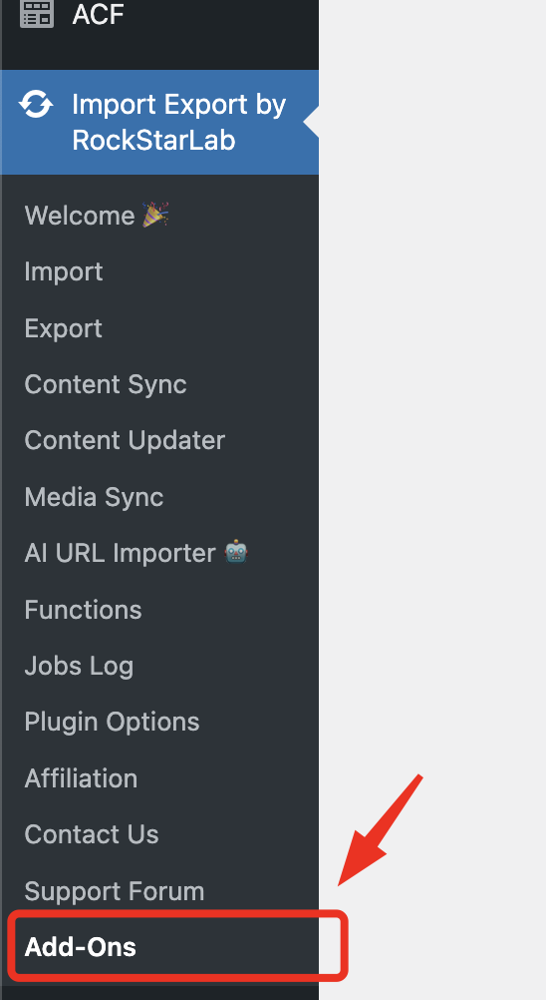
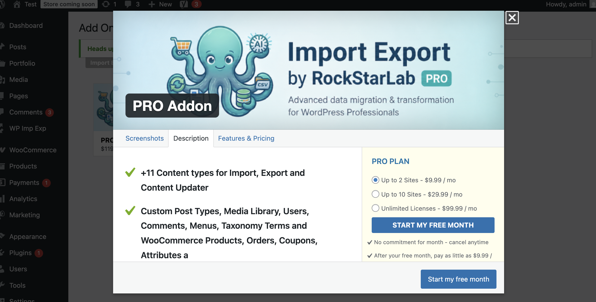

🧩 PRO Addon
WP Import Export by RockStarLab includes an optional PRO Addon that adds additional content types for Import, Export, and Content Updater.
What the PRO Addon adds
The free plugin supports core content types. The PRO Addon extends the plugin by adding additional content types for Import, Export, and Content Updater.
Import (additional content types)
- Custom Post Types
- Media
- Menus
- Users
- Comments
- Taxonomy Terms
- MySQL Database Table
- WooCommerce Products (if WooCommerce is installed)
- WooCommerce Orders (if WooCommerce is installed)
- WooCommerce Coupons (if WooCommerce is installed)
- WooCommerce Attributes (if WooCommerce is installed)
Export (additional content types)
- Custom Post Types
- Media
- Menus
- Users
- Comments
- Taxonomy Terms
- MySQL Database Table
- WooCommerce Products (if WooCommerce is installed)
- WooCommerce Orders (if WooCommerce is installed)
- WooCommerce Coupons (if WooCommerce is installed)
- WooCommerce Attributes (if WooCommerce is installed)
Content Updater (additional content types)
- Pages
- Custom Post Types
- Users
- Taxonomy Terms
- MySQL Database Table
- WooCommerce Products (if WooCommerce is installed)
🎉 Free 30-day trial
A free 30-day PRO Addon trial is available for all new users.
How to buy the PRO Addon
To purchase the PRO Addon, visit the Addons page in WordPress admin:
WP Admin → Import Export → Addons
or open the Addons page from your site's WordPress dashboard.
-
1Open Addons
Go to Import Export → Addons in WP Admin. -
2Select the PRO Addon
Choose the PRO Addon and proceed to checkout (or start the free 30-day trial if eligible). -
3Install & activate
After purchase/trial activation, install and activate the PRO Addon plugin. -
4Use additional content types
Return to the Import / Export / Content Updater pages to see the additional content types.

